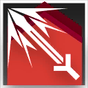

|
|
强力击丨Power Strike 攻击命中
消耗 1 技力
 立即
立即 |
“炮弹迅疾如风暴，盾牌坚硬似铁壁。”
――号角合同
重装-要塞：你擅长坚守战线阻击敌人，你能在防御的同时也通过重火力支援队友。
要塞（Fortress）是重装职业中其中一个职业分支。要塞结合了坚固的防御和重武器支援，使用重炮等武器在远距离打击敌人，同时用盾牌保护自己。他们的火力覆盖能为队伍创造优势，并压制敌方推进。
在战斗中，要塞部署在战略位置，利用重武器压制敌人。他们擅长区域控制和持续输出，并通过后勤储备维持弹药。职责是提供火力支援，并协助队伍突破敌方防线，确保战场主动权。
3级：重炮盾兵 Artillery Defender
作为一名要塞，你习得下述特性：
炮术精通。你获得单兵突击炮的熟练和精通。你还获得以下增益：
如果你一手持用盾牌，你可以单手持用一把单兵突击炮。
你使用单兵突击炮发动攻击时，可以使用力量而非敏捷作为攻击属性。单兵突击炮作为重型远程武器，仍需要至少敏捷属性13才能操作。
此外，你到达此等级时，立即获得一把只有你能使用的单兵突击炮。
后勤储备。你可以半价购买发射器章节提到的武器和弹药。如果你有等同发射器弹药价值一半的原材料，你也可以在完成一次长休后自己组装1份出来。
此外，你习得战技：强力击、迅捷打击 或 攻击力强化 其中之一。你可以在每次升级重新选择以此习得的战技。
|
|
强力击丨Power Strike 攻击命中
消耗 1 技力
立即 |
|
|
迅捷打击丨Swift Strike 附赠动作
消耗 1 技力
本回合结束 |
|
 |
攻击力强化丨Atk Up 附赠动作
消耗 1 技力
立即 |
3级：火力压制 Fire Suppression
当你在自己回合用远程武器命中一个生物，它将被压制直到你的下回合开始。
如果被压制的目标打算移动5尺或更远，你可以采取反应，使用远程武器对其发动攻击。
7级：阵地攻坚 Positional Tactics
你精确控制榴弹炮的爆炸来让自己在阵地战中无往不利。
你使用发射器弹药发动的攻击总是具有可控属性。
此外，你将你的单兵突击炮作为临时武器而进行近战攻击时，你具有其熟练项，这次攻击造成2d8点钝击伤害而非一般的临时武器伤害。
10级：专注轰击 Focus Bombardment
你已经习得如何进行精准的火力投射。你习得下述特性：
强力轰击。你的发射器武器攻击的伤害掷骰中加入你的攻击属性调整值。
此外，你习得战技：专注轰击。
|
|
专注轰击 | Focus Bombardment 附赠动作
消耗 1 技力
本回合结束 |
15级：钢铁防线 Steel Meridian
你充沛的火力组成了牢不可破的钢铁防线，掩护你的盟友。你习得下述特性：
火力支援。当你的一名可见盟友被攻击命中时，你可以立即采取反应，对其用单兵突击炮发动远程武器攻击。此外，你使用反应发动的远程攻击具有优势。
要塞防御。你未失能时，为周围5尺的其他盟友提供半身掩护。
18级：全弹发射 Full Launch
你懂得激发潜力，用澎湃的火力压制敌人。你消耗技力发动战技的回合，你可以使用魔法动作，立即发动至多等同你熟练加值次的远程武器攻击。每以此发动一次攻击，你就流失2d12点生命值。
此特性一经使用，你必须完成一次长休方可再次使用。